发信人: crazycams(小蚊子), 信区: outdoor
标 题: 2015暑期半脊峰登山职务总结-zcw
发信站: 饮水思源 (2015年10月13日00:21:57 星期二)
攀登队长——郑昌文
职务总结:
这次的原计划攀登透明梦柯的准备周期照理说是十分充足的，但万万没想到出发前一周，
和校团委沟通失败，无法拿到学校的知情函，因此无法在甘肃登协那里以学生登山队的名
义注册，若以个人名义注册，不仅注册费用较高，而且得比原计划晚出发一周，不得已，
只能临时换山。和队长，装备讨论之后，决定还是攀登半脊峰。
山峰简介：
半脊峰，海拔5430米，经102.907519, 纬31.221169，位于四川省阿坝藏族羌族自治州理县
毕棚沟旅游风景区深处，属九寨沟米亚罗黄金旅游线，距离四川省会成都250余公里，成都
出发至大本营约需五到七小时。2004年5月4日，七位登山者成功登顶一座未登峰，测得峰
顶处海拔5430米。此峰顶隐于一个山脊之后，所以当地并没有该峰的名称，依山顶的形状
首登者给它起名为半脊峰。
2004年5月，四川刃脊登山队6名山友实现首登。
进山：
半脊峰具有良好的接近性，13日全队在成都采购完物资后，14日早乘班车前往理县，与教
练汇合后，包了两台面包车前往毕棚沟景区。办理完进山手续，签字画押之后，全体队员
和两名教练坐景区大巴前往上海子大本营。大本营海拔3500米，但由于下雨，为了不打湿
帐篷，在和景区沟通后，将BC搬进了景区还未建好的员工宿舍内。板房二楼宽敞、干燥、
避雨、舒适，堪称五星级营地，尽管收取了400元的营地费，但是大家觉得很值。
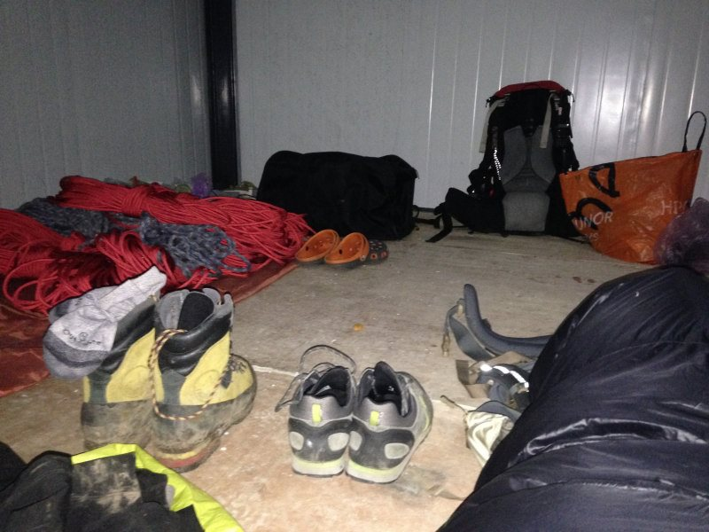 screen.width - 200){this.width = screen.width - 200}">
攀登过程：
7月14日：
全队抵达BC后，和教练商量后很快敲定了第二天的攀登计划：决定全队第一天运输大
部分物资到C1，体力相对较弱的4人和教练一同，留在C1适应海拔，第二天向冰川末端运输
攀登物资；剩下4人返回BC，隔天运输剩余物资到C1，全队宿C1。
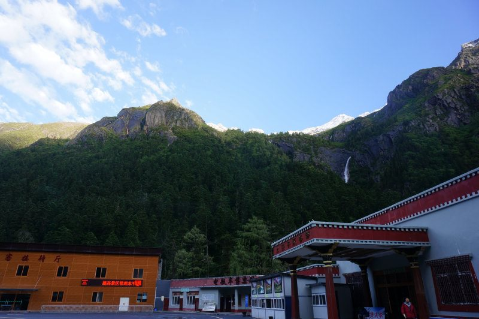 screen.width - 200){this.width = screen.width - 200}">
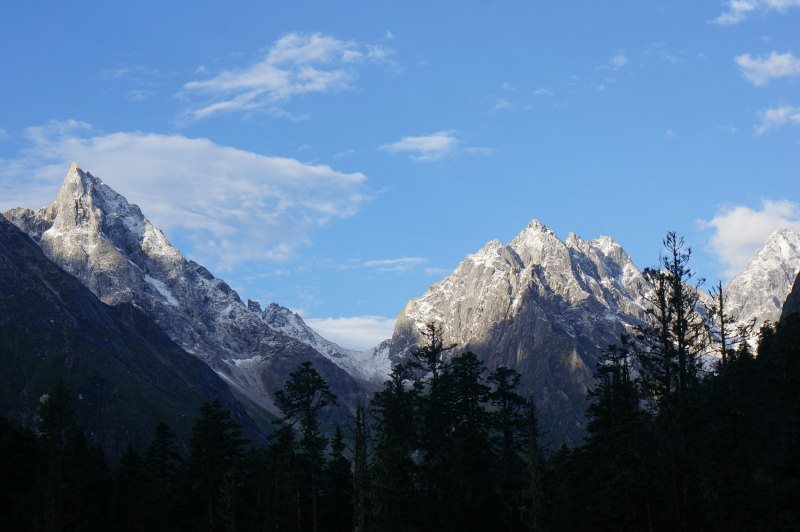 screen.width - 200){this.width = screen.width - 200}">
7月15日：
全队8点30分从BC出发，沿公路往东北方向，走约500米，到达半脊冰川的牌子处，开始进
山。沿途一路都有商业队留下的路标，基本无需担心迷路，连休息处也都有标示，走起来
相对也轻松。下午1点30抵达C1，海拔4400米。按照计划，我，何敏，陈震昊，高鹏远轻装返
回BC，第二天再将剩下的400米路绳运上来。下撤至BC后，陈震昊状态一直不好，没有胃口
，头疼。
7月16日：
第二天早上9点出发时，陈震昊头疼状况依旧不见好转，安全起见，避免在C1高反更加严重
，陈震昊决定下撤至理县，放弃这次攀登。剩下三人继续运输，12点30分抵达C1；两点半
左右，余下队员和教练向冰川末端运输物资返回。与教练协商后，3点30分开始进行技术培
训。主要进行上升下降，过节点的训练。
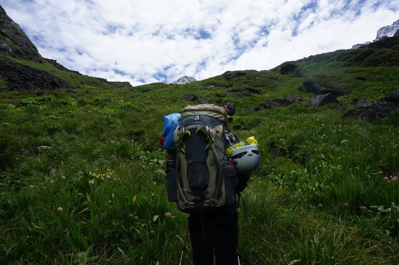 screen.width - 200){this.width = screen.width - 200}">
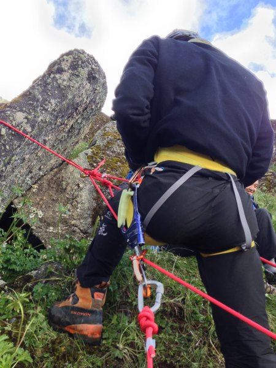 screen.width - 200){this.width = screen.width - 200}">
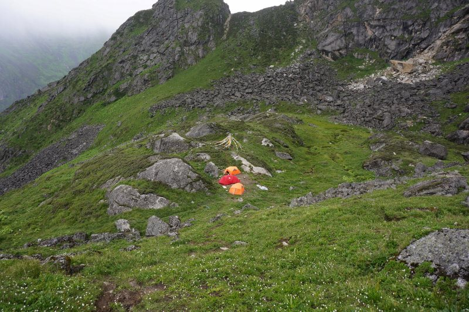 screen.width - 200){this.width = screen.width - 200}">
7月17日：
10点全队收拾完毕，在C1 藏好部分食物和装备后，出发前往C2，穿过C1上方的草甸，进入
碎石坡，全程带头盔。晓远在海拔4600米处，出现较严重高反，由何敏陪同下撤，其余队员和
教练继续向C2行进。12点30分抵达藏东西处，重新装包后，全队翻过拇指峰左侧垭口，抵
达4900米冰川末端。穿上安全带和冰爪，由于冰舌上雪层较薄，在和教练观察后决定，沿
冰舌上遗留路绳上升。上升途中只遇到一个明裂缝，约60公分宽，跨过即可。C2建立好营
地，进行了结组和滑坠制动训练。夜里大雪纷飞，和教练商量之后，认为4号线因为大雪，
雪层松软，雪坡较长，而且为40-50度，容易发生雪崩，所以冲顶路线定为全程为冰川路线
的2号线。2号线路线最短，但是冰坡坡度较陡，全程约为50-70度。无论是修路还是上升均
对攀冰技术有一定要求。与教练协商好，明天带150米路绳用于修路，30米路绳用于结组。
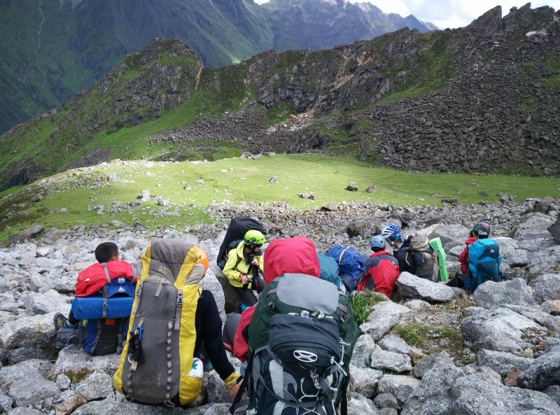 screen.width - 200){this.width = screen.width - 200}">
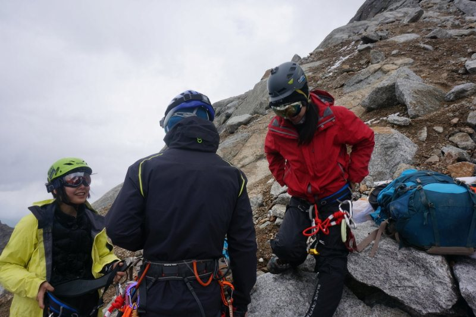 screen.width - 200){this.width = screen.width - 200}">
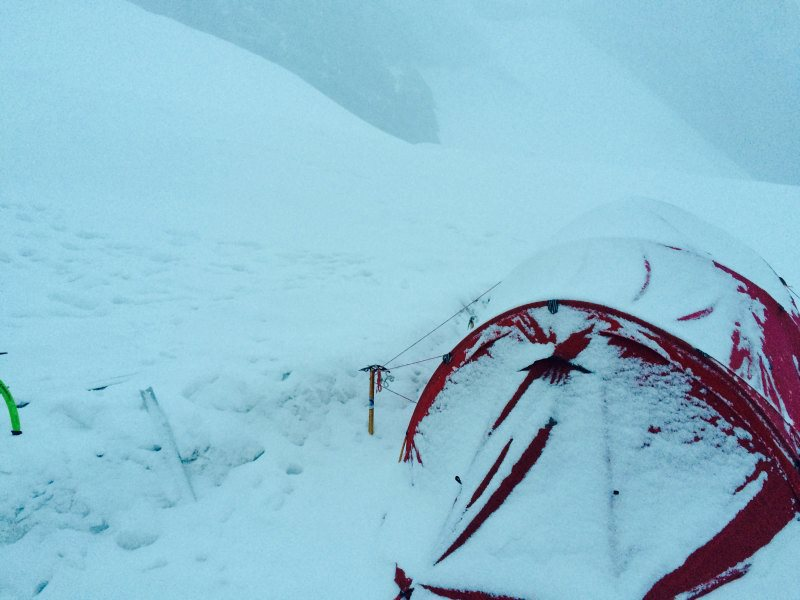 screen.width - 200){this.width = screen.width - 200}">
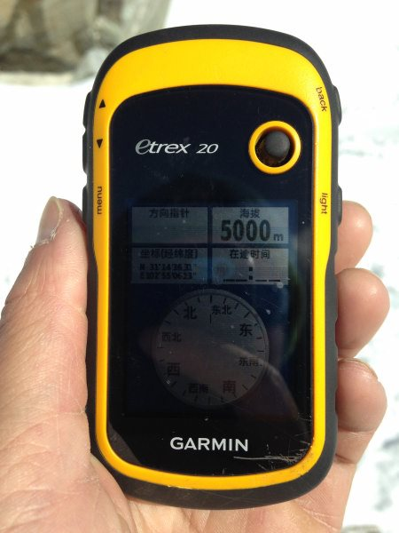 screen.width - 200){this.width = screen.width - 200}">
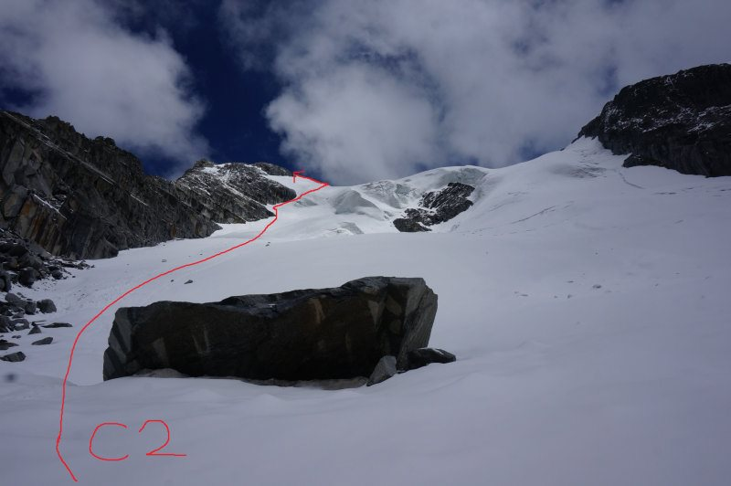 screen.width - 200){this.width = screen.width - 200}">
7月18日：
凌晨三点起床，烧水，为了节省时间仅煮了一锅麦片作为早餐（这有可能是导致下撤途时
陈颖君体力透支的原因）。教练带三捆路绳，我带一捆50米的结组绳。所有冰锥，两个雪
锥，5根冰洞绳，建立保护站主锁4把，两把冰洞钩。4点40分，全队出发。攀登路线十分清
晰，C2出发后是一段长约100米的30度的雪坡，由于前夜大雪，加之凌晨气温较低，雪层足
够厚实，这一段无需结组；接着是70-80米的一段45度左右的雪坡，两段之后，便开始修路
。第一段绳距为雪坡，坡度约为55度，由我来先锋，教练沿途指导。先锋了40米左右，教
练认为修路速度过慢，于是后面路段由他们修路，在冰川与岩石连接处，教练继续领攀。
第一段的保护站的冰面雪层太薄，清理表面浮雪后打冰锥做保护站；第二段绳距坡度变大
，约60度；第三段绳距坡度约75度，长度约45米。翻上垭口的平台，所有人结组，这里离
顶峰还有100米左右，雪很厚，稍不注意整个人就会陷入雪坑，挣扎出来非常费体力。8点
40分，7人登顶半脊峰。下撤时，陈颖君和许毓君滑坠一次，所幸及时制动。在下降时，我
和高鹏远分别在两个保护站等待，检查队员下降操作是否有问题。在接近C2的雪坡上大家
集体滑雪下降，也算是练习了滑坠制动。
下撤途中，在冰川末端使用了遗留路绳。下撤至垭口附近时，遇到大雾，远处的乌云也预
示着一场大雪的到来。尽管遇到了意外，但是依旧顺利下撤到了C1，下午5点左右所有人安
全下撤到BC。
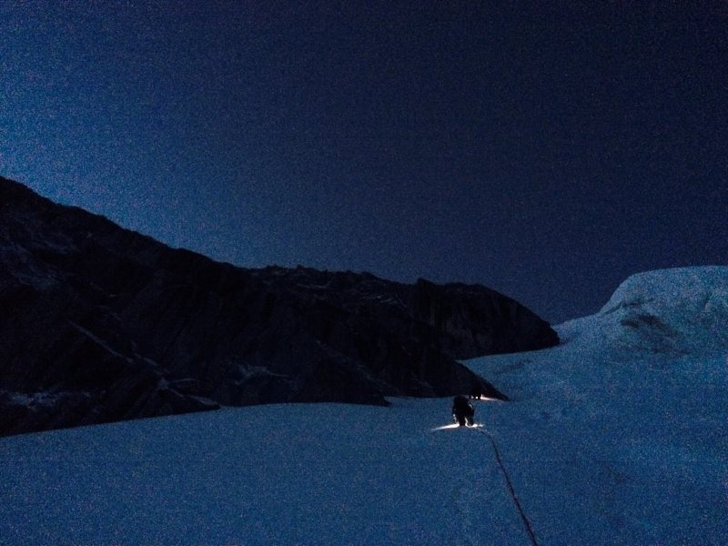 screen.width - 200){this.width = screen.width - 200}">
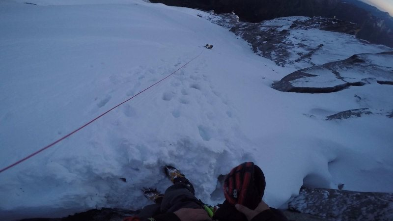 screen.width - 200){this.width = screen.width - 200}">
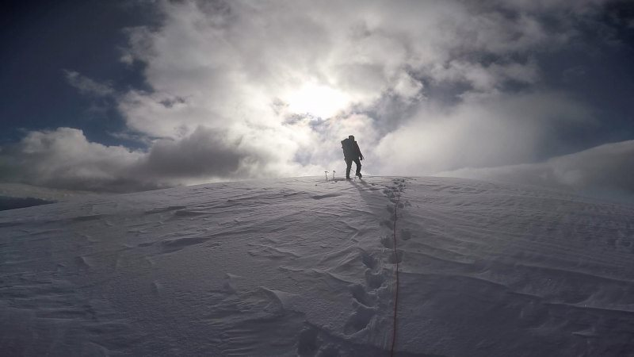 screen.width - 200){this.width = screen.width - 200}">
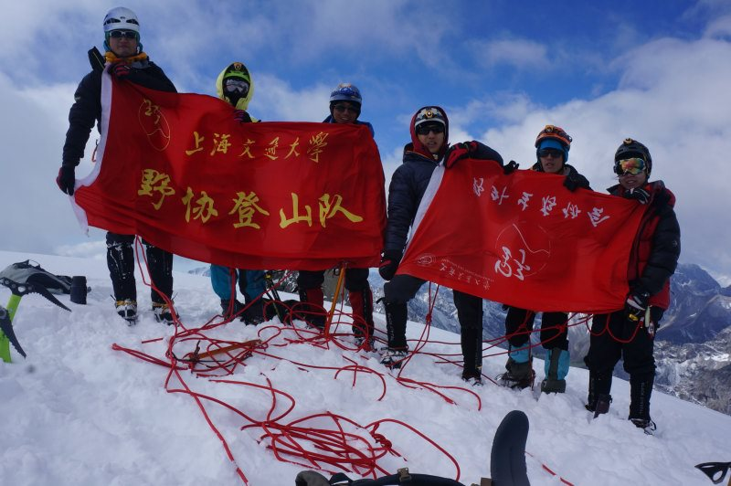 screen.width - 200){this.width = screen.width - 200}">
出山：
出山是进山的逆过程。
技术总结：
作为这次登山的攀登队长，在训练期间也召集大家进行了2次技术培训（上升下降，结组，
滑坠制动等），再加上巅峰户外学校的登山公益培训，出发前所有队员对于登山所需的技
术知识应该有一个大致的了解了。但在C1进行技术训练时，被两位教练指出了很多不足之
处，主要问题有以下几点：
1.牛尾绳与安全带的连接采用编式八字连接最佳，山鹰社的连接方法有存在绳结滑动的可
能。
2.牛尾绳与上升器最好采用主锁连接，牛尾绳套进上升器锁孔的方式会切割绳子，不宜长
时间使用。
3.牛尾绳两端的绳结一定要打防脱结。
4.下降的技术有两种，扁带延长下降和直接用ATC下降，这点在以后的技术规范中单独描述
。
5.上升器前端小孔在使用时最好挂入一把单锁，避免出现意外绳子从上升器中脱出（这个
技术细节应该统一，不是所有人都有这个习惯）。
在攀登准备期间，由于换山，之前透明梦柯的攀登计划废掉。重新制作的半脊峰的攀登计
划在到达BC当日被教练否定，对于八人小队伍攀登半脊来说，在不知道队员的体力和适应
状态的情况下，一开始就分A，B两组是不合适的。教练提供了更为合理的方式：让所有队
员背负大部分装备到C1，根据到达时的状态，再来决定运输队的人选，其余队员留守C1适
应海拔。次日留守队员向冰舌末端运输部分食物和技术装备，同时适应海拔。可能是大本
营和C1沟通不畅，在16日在C1汇合时，才发现并没有向上面运输多少物资，只有冰镐、冰
爪和两袋食物，导致17日出发时，所有人负重也基本在30斤以上。后来细想，应该15
日首先把绳子运输上去，再由留守队员向上运输大部分路绳及部分技术装备。
总的来说，这次攀登中，大家的攀登欲望还是比较强烈，能够正确处理个人和团队的关系
，尤其是因为高反下撤的队员，情绪非常稳定；队员之间非常团结，团队气氛一直非常不
错，总是有说有笑的。前期训练暴露的问题除了技术细节外，还有体能训练的不足，尽管
体能训练计划很充实，但是队员对于训练的态度不够严谨，而且最后体能训练也没有测试
与考核一项，在考试周结束后的恢复训练也因为种种原因未能成形。希望在明年的登山准
备中加强训练的纪律。在雪山上，体力不足将是一件非常危险的事。
最后附上这次攀登的航迹图
BC-C1
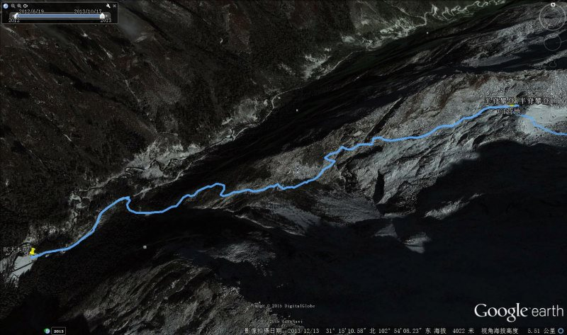 screen.width - 200){this.width = screen.width - 200}">
C1-C2
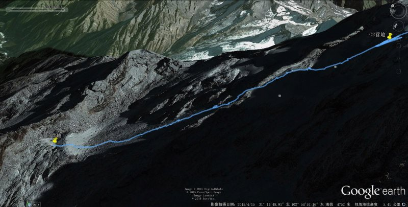 screen.width - 200){this.width = screen.width - 200}">
C2-Summit
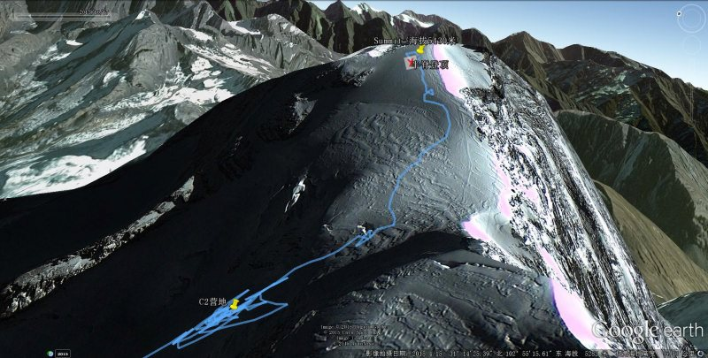 screen.width - 200){this.width = screen.width - 200}">
--
-Why did you want to climb Mount Everest?
-Because it's there!
--George Mallory
※ 来源:·饮水思源 bbs.sjtu.edu.cn·[FROM: 219.228.118.20]
※ 修改:·crazycams 于 2015年10月13日09:47:35 修改本文·[FROM: 219.228.118.20]
※ 修改:·crazycams 于 2015年10月13日16:12:28 修改本文·[FROM: 219.228.118.20]
※ 修改:·crazycams 于 2015年10月13日16:13:36 修改本文·[FROM: 219.228.118.20]
※ 修改:·crazycams 于 2015年10月13日16:20:15 修改本文·[FROM: 219.228.118.20]
|